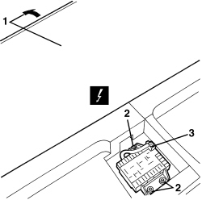
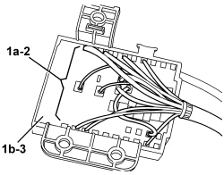
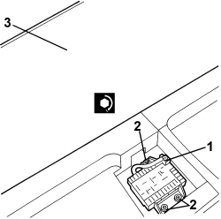
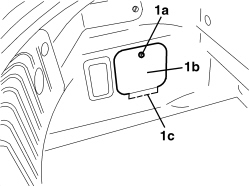
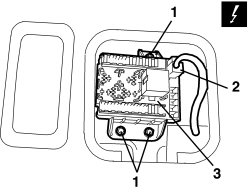
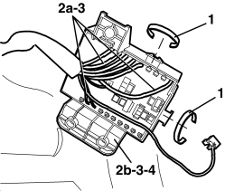

5505A14 SUPPLEMENTARY JUNCTION BOX IN LUGGAGE COMPARTMENT - R.R
- Path
- Procedures > 55 ELECTRICAL EQUIPMENT > 5505 INSTRUMENT/GAUGE ELECTRICAL CIRCUITS > 5505A MULTI-FUNCTION COMPONENTS > 5505A14 SUPPLEMENTARY JUNCTION BOX IN LUGGAGE COMPARTMENT - R.R
- Kind
- repair procedure (removal / refitting; the operation number is the code)
- Applies to
- all engines; all production periods
- Interactive page
- https://sloeber94.github.io/elrnDB-aBrrSpdr/en/#/946002327
Applies to: all engines; all production periods
 Removing
Removing
 Refitting
Refitting- Remove the rear parcel shelf.
1. Fold the luggage compartment floor covering forwards.
2. Undo the nuts.
3. Disconnect the electrical connection.
Description | Component |
|---|---|
LUGGAGE COMPARMENT JUNCTION UNIT (CVB) |

Applies to: all engines; all production periods
1. Working at the rear of the control unit, mark the position of the terminals (1a) connected to the control unit (1b).
2. Use the COPAT extractor set art. 530/S to disconnect the terminals (1a) from the control unit.
3. Keep the control unit.

Applies to: all engines; all production periods
Refitting
Removing- Check that the control unit is not damaged.
- Use the COPAT extractor set art. 530/S to connect the terminals to the control unit in accordance with the layout defined during removal.
1. Connect the electrical connection.
2. Position the control unit and tighten the bolts.
Component | Fastening | dia | Value (daNm) | Validity |
|---|---|---|---|---|
LUGGAGE COMPARTMENT JUNCTION UNIT | Nut | M6 | 0.6 ÷ 1.0 |
3. Extend the luggage compartment covering.

Applies to: all engines; all production periods
- Refit the rear parcel shelf.
Applies to: engines: 2.2 JTS, 3.2 JTS; all production periods; only with equipment: Spider
Removing
Refitting- Open the boot lid.
1. Working on the left side of the boot, rotate retainer (1a), then remove cover (1b) by releasing retainer (1c).

Applies to: engines: 2.2 JTS, 3.2 JTS; all production periods; only with equipment: Spider
1. Undo the control unit nuts.
2. Detach the electrical connection.
Description | Component |
|---|---|
LUGGAGE COMPARMENT JUNCTION UNIT (CVB) |
3. Move the control unit slightly.

Applies to: engines: 2.2 JTS, 3.2 JTS; all production periods; only with equipment: Spider
1. Working on the rear of the control unit, cut the cable retaining bands
2. Mark the reciprocal positions of terminals (2a) connected to control unit (2b).
3. Use the COPAT extractor set, item code 530/S, to disconnect terminals (2a) from the control unit.
4. Recover the control unit.

Applies to: engines: 2.2 JTS, 3.2 JTS; all production periods; only with equipment: Spider
Refitting
Removing- Check that the control unit is not damaged.
- Use the COPAT extractor set, item code 530/S, to connect the terminals to the control unit in accordance with the layout defined during removal.
- Fit the cable retaining bands.
- Attach the electrical connection.
- Position the control unit and tighten the nuts.
- Position the cover and attach the retainers.
- Close the boot lid.
Topics linked from this page (1)
Topics that link to this page (31)
- 5505 INSTRUMENT/GAUGE ELECTRICAL CIRCUITS
- E1010 POWER SUPPLY SYSTEM - WIRING DIAGRAM
- E1010 POWER SUPPLY SYSTEM - COMPONENT LOCATION
- E1010 POWER SUPPLY SYSTEM - WIRING DIAGRAM
- E1010 POWER SUPPLY SYSTEM - COMPONENT LOCATION
- E3050 FRONT ELECTRIC WINDOWS - WIRING DIAGRAM
- E3050 FRONT ELECTRIC WINDOWS - COMPONENT LOCATION
- E3050 FRONT ELECTRIC WINDOWS - WIRING DIAGRAM
- E3050 FRONT ELECTRIC WINDOWS - COMPONENT LOCATION
- E3075 HEATED SEATS - WIRING DIAGRAM
- E3075 HEATED SEATS - COMPONENT LOCATION
- E3075 HEATED SEATS - WIRING DIAGRAM
- E3075 HEATED SEATS - COMPONENT LOCATION
- E3076 ELECTRICALLY ADJUSTABLE SEATS - WIRING DIAGRAM
- E3076 ELECTRICALLY ADJUSTABLE SEATS - COMPONENT LOCATION
- E3076 ELECTRICALLY ADJUSTABLE SEATS - WIRING DIAGRAM
- E3076 ELECTRICALLY ADJUSTABLE SEATS - COMPONENT LOCATION
- E3076 ELECTRICALLY ADJUSTABLE SEATS - WIRING DIAGRAM
- E3076 ELECTRICALLY ADJUSTABLE SEATS - COMPONENT LOCATION
- E3076 ELECTRICALLY ADJUSTABLE SEATS - WIRING DIAGRAM
- E3076 ELECTRICALLY ADJUSTABLE SEATS - COMPONENT LOCATION
- E3096 HOOD OPENING - WIRING DIAGRAM
- E3096 HOOD OPENING - COMPONENT LOCATION
- E3510 RADIO - WIRING DIAGRAM
- E3510 RADIO - COMPONENT LOCATION
- E3510 RADIO - WIRING DIAGRAM
- E3510 RADIO - COMPONENT LOCATION
- E3510 RADIO - WIRING DIAGRAM
- E3510 RADIO - COMPONENT LOCATION
- E3510 RADIO - WIRING DIAGRAM
- E3510 RADIO - COMPONENT LOCATION